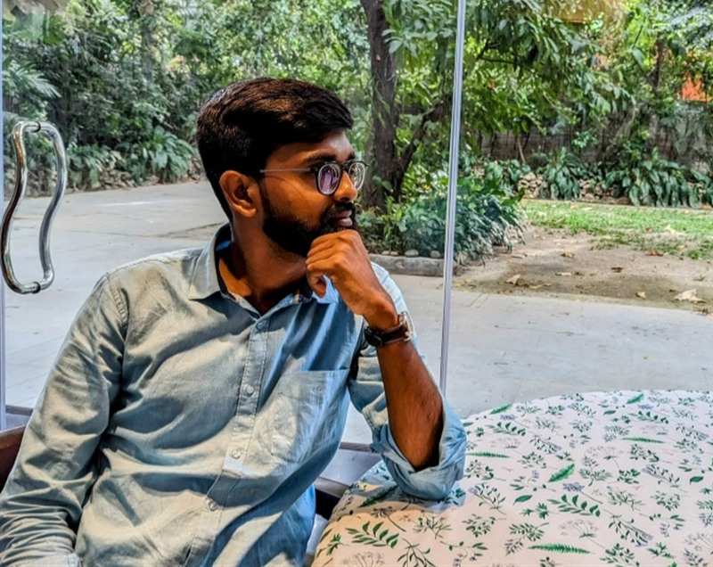

Featured Portfolio

Researcher, Filmmaker & Ex-Gen. Secretary
Sandip Kumar Mistry
Documentary director, researcher, musicologist, and former BFIAA General Secretary. Known for rigorous historical investigations, 1971 liberation narratives, and human rights cinema.
View Full Portfolio Profile →